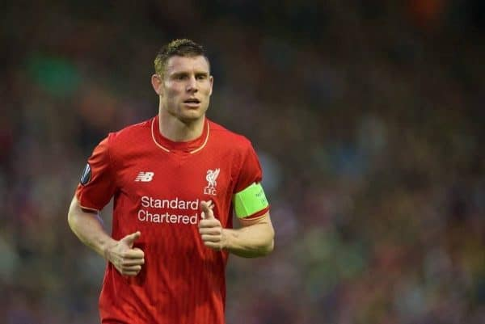

The top 10 all-time Premier League appearance leaders are:

- James Milner (657 Appeareances)
- Gareth Barry (653 Appeareances)
- Ryan Giggs (632 Appeareances)
- Frank Lampard (609 Appeareances)
- David James (572 Appeareances)
- Gary Speed (535 Appeareances)
- Emile Heskey (516 Appeareances)
- Mark Schwarzer (514 Appeareances)
- Jamie Carragher (508 Appeareances)
- Phil Neville (505 Appeareances)